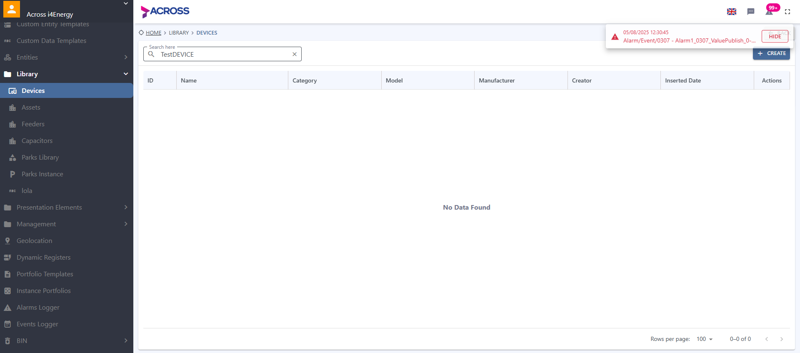

-
Login
10:15:28 AM / 00:00:07:184 Pass
Login
09.02.2025 10:15:28 AM 09.02.2025 10:15:35 AM 00:00:07:184 · #test-id=1PassTC-01 Login With Valid CredentialsGiven Navigate to QA EnvironmentWhen Login with QA user credentialsThen Login should be successfully -
Logout
10:15:35 AM / 00:00:09:851 Pass
Logout
09.02.2025 10:15:35 AM 09.02.2025 10:15:45 AM 00:00:09:851 · #test-id=8PassTC-02 Logout From ApplicationGiven Navigate to QA EnvironmentWhen Login with QA user credentialsThen Login should be successfullyAnd Go to MyAccountAnd Click Logout ButtonThen User Should Logout Successfully -
Device Creation
10:15:45 AM / 00:00:14:719 Pass
Device Creation
09.02.2025 10:15:45 AM 09.02.2025 10:16:00 AM 00:00:14:719 · #test-id=18PassTC-03 Device Creation ScenarioGiven Navigate to QA EnvironmentWhen Login with QA user credentialsThen Login should be successfullyAnd User clicks following ButtonspersonIcon library devices plusIcon And User enters data to necessary areasname TestDEVICE model TestMODEL description DeviceForTest And User selects necessary areasprotocol modbus manufacturer mas edit engine heatEngine And User press the Esc Button on Keyboard Times1 And User changes languages of relevant fieldsenglish greek And User enters data to necessary areasname TestDEVICE And User selects necessary areasshareable shareable And User confirms the selectionsave yes Then User should see success messagesuccess success -
Device Editing
10:16:00 AM / 00:00:12:775 Pass
Device Editing
09.02.2025 10:16:00 AM 09.02.2025 10:16:13 AM 00:00:12:775 · #test-id=34PassTC-04 Device Editing ScenarioGiven Navigate to QA EnvironmentWhen Login with QA user credentialsThen Login should be successfullyAnd User clicks following ButtonspersonIcon library devices search And User search the itemsearch TestDEVICE And User clicks following ButtonssearchButton Then User should to find the item in fieldnameContains TestDEVICE And User clicks following ButtonsnameContains hide edit And User enters data to necessary areasname TestDeviceEdit And User confirms the selectionsave yes And User clicks following Buttonsdevices And User search the itemsearch Edit Then User should to find the item in fieldnameContains Edit -
Device Deletion
10:16:13 AM / 00:00:10:625 Pass
Device Deletion
09.02.2025 10:16:13 AM 09.02.2025 10:16:23 AM 00:00:10:625 · #test-id=51PassTC-04 Device Deletion ScenarioGiven Navigate to QA EnvironmentWhen Login with QA user credentialsThen Login should be successfullyAnd User clicks following ButtonspersonIcon library devices search And User search the itemsearch TestDEVICE And User clicks following ButtonssearchButton Then User should to find the item in fieldnameContains TestDEVICE And User clicks following Buttonsdelete yes And User should see success messagesuccess success And User clicks following Buttonsdevices Then User should not find itemnameContains TestDEVICE -
Register Creation
10:16:23 AM / 00:00:29:628 Fail
Register Creation
09.02.2025 10:16:23 AM 09.02.2025 10:16:53 AM 00:00:29:628 · #test-id=66FailTC-06 Register Creation ScenarioGiven Navigate to QA EnvironmentWhen Login with QA user credentialsThen Login should be successfullyAnd User clicks following ButtonspersonIcon library devices And User search the itemsearch TestDEVICE And User clicks following ButtonssearchButton Then User should to find the item in fieldnameContains TestDEVICE And User clicks following ButtonsnameContains registers plusIcon Step skippedAnd User enters data to necessary areasregisterName TestRegister displayName TestRegisterDisplay description RegisterForDevice registerAddress AddressForRegister scanRate 7000 Step skippedSteps._Hooks.after(io.cucumber.java.Scenario)screenshot name
-
org.openqa.selenium.TimeoutException
1 tests
org.openqa.selenium.TimeoutException
1 failedStatus Timestamp TestName Fail 10:16:30 AM Then User should to find the item in field Register Creation.TC-06 Register Creation Scenario.Then User should to find the item in field
-
@SmokeTest
6 tests
@SmokeTest
5 passed 1 failedStatus Timestamp TestName Pass 10:15:28 AM TC-01 Login With Valid Credentials Login.TC-01 Login With Valid CredentialsPass 10:15:35 AM TC-02 Logout From Application Logout.TC-02 Logout From ApplicationPass 10:15:45 AM TC-03 Device Creation Scenario Device Creation.TC-03 Device Creation ScenarioPass 10:16:00 AM TC-04 Device Editing Scenario Device Editing.TC-04 Device Editing ScenarioPass 10:16:13 AM TC-04 Device Deletion Scenario Device Deletion.TC-04 Device Deletion ScenarioFail 10:16:23 AM TC-06 Register Creation Scenario Register Creation.TC-06 Register Creation Scenario -
@Regression
6 tests
@Regression
5 passed 1 failedStatus Timestamp TestName Pass 10:15:28 AM TC-01 Login With Valid Credentials Login.TC-01 Login With Valid CredentialsPass 10:15:35 AM TC-02 Logout From Application Logout.TC-02 Logout From ApplicationPass 10:15:45 AM TC-03 Device Creation Scenario Device Creation.TC-03 Device Creation ScenarioPass 10:16:00 AM TC-04 Device Editing Scenario Device Editing.TC-04 Device Editing ScenarioPass 10:16:13 AM TC-04 Device Deletion Scenario Device Deletion.TC-04 Device Deletion ScenarioFail 10:16:23 AM TC-06 Register Creation Scenario Register Creation.TC-06 Register Creation Scenario
Started
Sep 2, 2025 10:15:28 AM
Ended
Sep 2, 2025 10:16:53 AM
Features Passed
5
Features Failed
1
Features
Scenarios
Steps
Timeline
Tags
| Name | Passed | Failed | Skipped | Others | Passed % |
|---|---|---|---|---|---|
| @SmokeTest | 5 | 1 | 0 | 0 | 83.333% |
| @Regression | 5 | 1 | 0 | 0 | 83.333% |